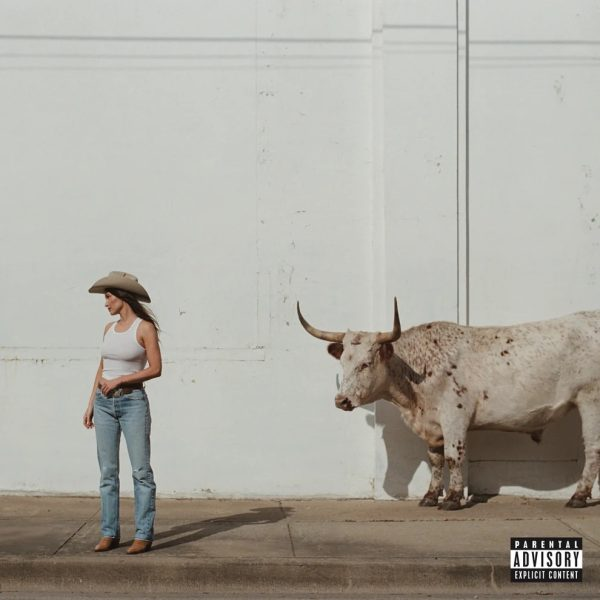

by Kacey Musgraves
This is such a pleasant country listening experience. Musgraves doesn't do any shout/loud singing which really leans on the lyrics to carry the vocal department, which they definitely do. The metaphors and creativity of Dry Spell is some of the best I have ever listened to. This project was my first of Kacey Musgraves I was diving in and reviewing after hearing a couple single tracks and features of hers elsewhere. Overall I wasn't blown away by anything released here, but I am interested to hear more from her in the future. In a space of my listening majorly dominated by men until now, Country, it is a breath of fresh air to have a few of these songs sprinkled into the mix. My personal favorites off this album were Dry Spell, Mexico Honey, and Loneliest Girl. Album was reviewed on May 2nd, 2026.